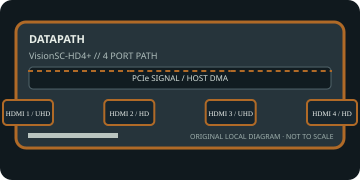

[ INDIVIDUAL COMPONENT // EXPANSION CARDS ]
Datapath VisionSC-HD4+
Four independent HDMI/DVI capture channels, with two UHD-rate and two HD-rate inputs. This static reference distinguishes documented card I/O from host software, codecs, and external signal paths.

IDENTIFICATION: Match the exact SKU, model marking, part number, board revision, bracket and connector layout to manufacturer documentation. Similar family names do not imply interchangeable ports, firmware or support.
Capture, playback and compatibility specifications
| Exact model / SKU | VisionSC-HD4+ — verify the marking and revision on the physical card. |
|---|---|
| PCI/PCIe bus and lanes | PCI Express Gen 3 x8; fit an electrically x8 slot for full bandwidth. Card dimensions, active heatsink clearance and host airflow matter. |
| Digital video inputs | Four HDMI 1.4 inputs with embedded audio; channels 1 and 3 support up to 3840×2160 at 60 Hz, while channels 2 and 4 support up to 1920×1080 at 60 Hz. DVI sources may use the documented adapter leads. |
| Analog ports | No analog video capture/output. HDMI is digital; a DVI adapter changes connector compatibility but does not provide composite/component analog capture. |
| Input formats | Independent HDMI capture up to the model’s per-port pixel-clock limits (two UHD/4K60-class channels and two 1080p60-class channels). Pixel packing and concurrent modes depend on the driver and aggregate PCIe bandwidth. |
| Output formats and connectors | Capture-only: no HDMI or SDI playback outputs. Captured frames and embedded audio are exposed to host software. |
| Encoding and driver model | No onboard media-file encoder. Datapath driver/SDK moves supported RGB/YUV/mono capture formats into system memory; recording codecs are selected by the host application. |
| Operating-system compatibility | Datapath Vision Performance driver/SDK; current product information lists Windows 10/11 and Windows Server releases, with Linux Video4Linux support depending on the release. Check the exact OS/driver combination. |
| Software | Datapath Vision software/SDK and compatible DirectShow, V4L2 or application integrations; software handles channel enumeration, capture and any recording/encoding. |
| Power and cooling | Published maximum is approximately 18 W (12 V and 3.3 V rail loading specified by Datapath). Plan host-slot power and cooling for four-channel sustained capture. |
| Firmware caveat | Update only with Datapath software designated for VisionSC-HD4+; keep driver, firmware and capture SDK versions aligned. Do not assume the standard VisionSC driver applies to other HD4 variants. |
Integration notes and limitations
- The two UHD-rate and two HD-rate ports are not four simultaneous UHD60 channels. Check port numbering, EDID, HDCP/source restrictions, bandwidth and thermal conditions.
- Verify physical slot fit, PCIe lane wiring, BIOS/UEFI enumeration, host bandwidth and driver support together; a longer slot does not guarantee the electrical width the card needs.
- Record the board revision, firmware/driver versions, OS build, application, signal standard, source timing and tested pixel format as part of commissioning.
- Distinguish a video transport/pixel format from a compressed file codec. Unless the manufacturer explicitly states hardware encoding, codec creation and recording are host-application tasks.
Manufacturer sources and support
- Datapath — VisionSC-HD4+ product informationManufacturer source; consult the exact model/revision and software-release notes before installation.
- Datapath Documents — official video-capture datasheet and download libraryManufacturer source; consult the exact model/revision and software-release notes before installation.
Product revisions, driver support and application integrations change over time; manufacturer documentation for the exact card takes precedence over generic family-level guidance.